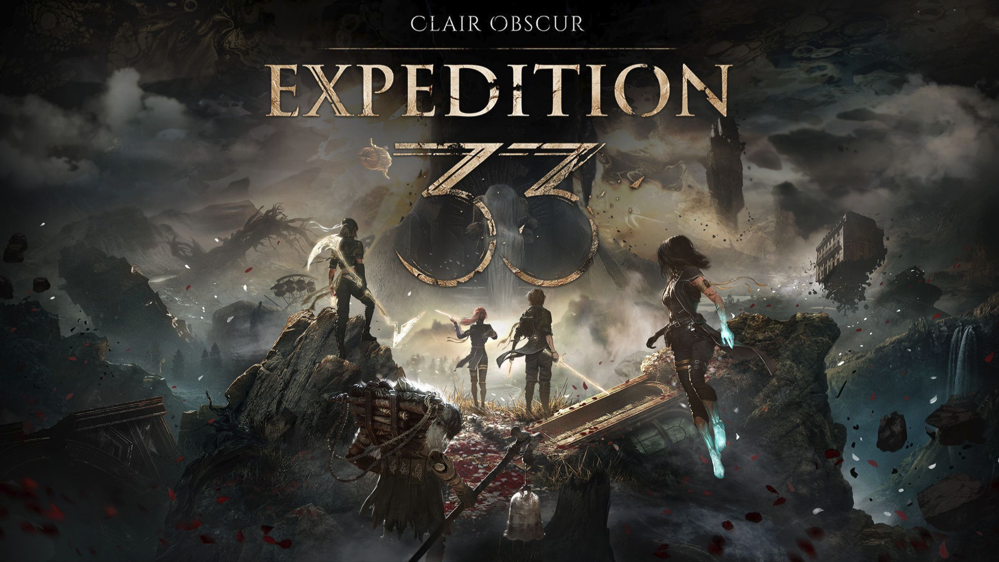

第四章
《33号远征队》的核心玩法是回合制 RPG，但它绝不是"站桩互砍"。 它的灵魂在于节奏——在回合的缝隙中，通过精准的时机判断来扭转战局。
经典回合制骨架，注入现代化的节奏感。每一回合都有决策重量——不是"最强技能循环"，而是解读敌人意图后的见招拆招。
在敌人出手的瞬间，玩家可以通过精准的时机判断进行闪避或招架。这打破了"回合制=没有操作感"的刻板印象。同样的等级、同样的装备，一个掌握了节奏的玩家和没有掌握的玩家，完全是两个世界。
游戏中的核心能力系统。Pictos 如同绘师的画笔——通过组合不同的技能符文来释放强大的能力。这不仅是战斗工具，更是世界观的延伸：你也在"作画"，用你的方式在世界的画布上留下痕迹。
一种在战斗中累积的光能资源。它的设定精妙之处在于：越是身处绝境，光能越亮。这既是游戏机制，也是叙事隐喻——在最深沉的黑暗中，恰恰是希望最可能被点燃的时刻。
不是简单堆数值。每个角色的成长路径都与其人物弧光关联——Gustave 学会承担、Maelle 学会坚定、Lune 学会放下。角色的战斗风格，就是他们性格的延伸。
在破败的现实世界与超现实的画中世界之间穿梭。两个世界的视觉、氛围、甚至物理规则都不同——探索本身就是一场不断迷失又不断找到方向的旅程。

战场如同一幅正在绘制的画 —— 每一回合都是笔触